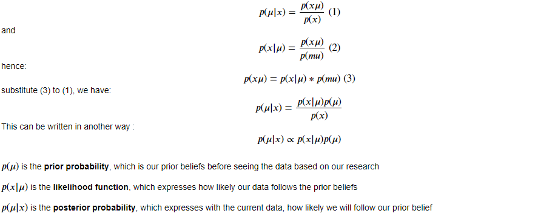
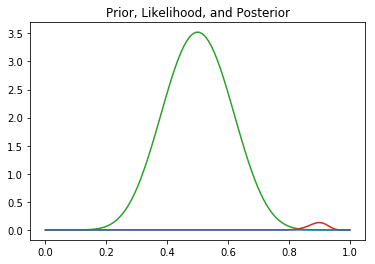
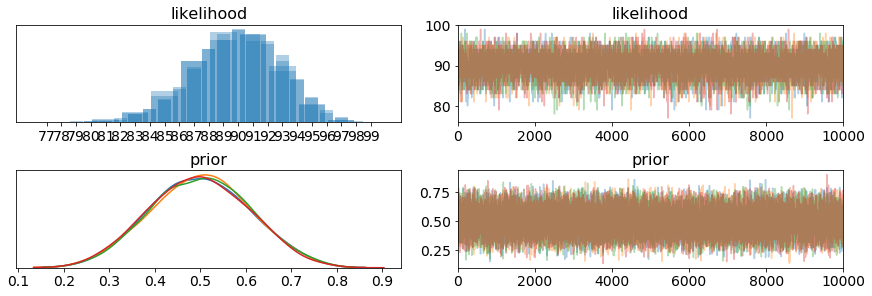
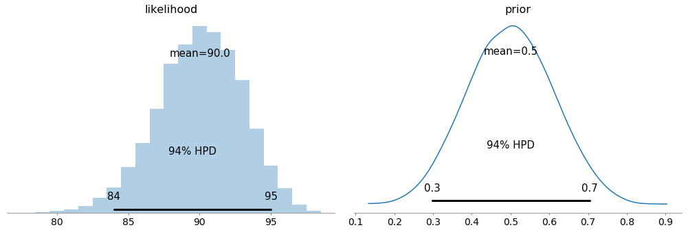
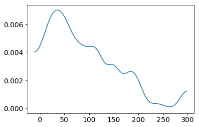
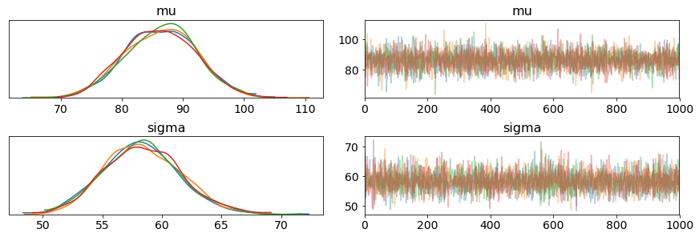
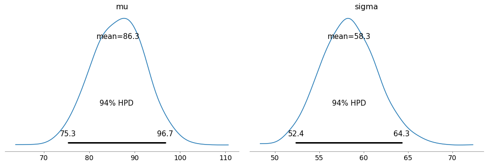

What is Bayesian Statistics ?
“Bayesian statistics is a mathematical procedure that applies probabilities to statistical problems. It provides people the tools to update their beliefs in the evidence of new data.”
In simple words, Bayesian statistic is a technique where we start with our prior beliefs about something based on our prior research. These beliefs will then be adjusted and combined with the data. The result that we use to make a prediction will not only be a single number, but a distribution of likely answers.
This technique is much better than any advanced machine algorithm in a sense that it is not a black box, and can be easily understood by observers. In addition, it does not require a huge collection of data.
Bayes Rule
Bayes rule based on conditonal probability. Let's try to derive the Bayes formula based on our simple understanding of conditional probability.

import numpy as np
import matplotlib.pyplot as plt
from scipy.stats import binom, beta
## We want to vary p from 0 to 1.
lst = np.linspace(0,1,100)
## Set up prior.
a = 10
b = 10
prior = [beta(a,b).pdf(i) for i in lst]
## Set up likelihood.
n = 100
k = 90
likelihood = [binom(n,i).pmf(k = k) for i in lst]
## Calculate posterior based on prior and likelihood.
posterior = np.multiply(prior, likelihood)
## Plot prior, likelihood, and posterior.
plt.title("Prior, Likelihood, and Posterior")
plt.plot(lst, prior, c = 'tab:green');
plt.plot(lst, likelihood, c = 'tab:red');
plt.plot(lst, posterior, c = 'tab:blue');


PyMC3
In the past, people need to calculate these things by hand. However, luckily, in Python, we have a package that can help us performing all the steps.
Let's try to replicate the previous example with PyMC3.
import pymc3 as pm
with pm.Model() as model:
# Set priors for parameters
prior = pm.Beta("prior", alpha = 10, beta = 10)
likelihood = pm.Binomial("likelihood", n = 100, p = 0.9)
trace = pm.sample(10000, tune=1000)
pm.traceplot(trace)

pm.plot_posterior(trace)

Let's have another example then we can analyze what those graphs mean.
Assuming I have the data for the price of a regular concert. We will perform Bayesian inference on this data.
from scipy.stats import skewnorm
a = 10
price = skewnorm.rvs(a, size=100)*100
pm.plot_kde(price)

Before performing, let's set some of our prior and likelihood.
For priors:
-
mu, which is the mean of the price. Without any knowledge, I will make it follow Uniform distribution. Luckily, I know one thing that the price cannot be lower than 0 and cannot be higher than 300. Hence, I will set the lower boundary = 0, and the upper boundary = 300
-
sigma, which is the standard deviation of the price. I do not have that much knowledge about this too. Hence, I will just set it as half normal distribution as it can only be positive.
For likelihood function:
- The price will be normal distributed with the priors mu and sigma

with pm.Model() as model_g:
mu = pm.Uniform('mu', lower=0, upper=300)
sigma = pm.HalfNormal('sigma', sd=10)
y = pm.Normal('y', mu=mu, sd=sigma, observed=price)
trace = pm.sample(1000, tune=1000)
pm.traceplot(trace)

- On the left, we have KDE (Kernel Density Estimate) plot, as we can see, we have 4 diffrent color lines, each line represents 1 chain in the process. From these 4 lines, we can briefly estimate where our real mu and sigma are
- On the right, we have the trace plot. This represents the value of each steps during the process
pm.plot_posterior(trace)

- From this plot, we can interpret that 94% the belief for the mean ticket price is between 75.3 and 96.7.
- We can say the same thing for sigma that 94% the belief for the standard deviation of the ticket price is between 52.4 and 64.3